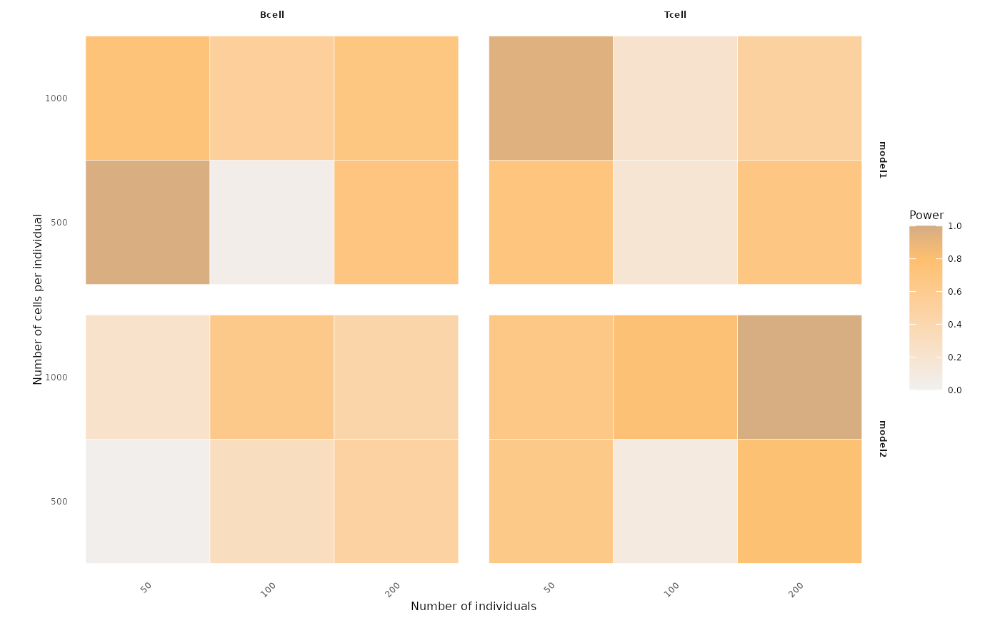

Create a faceted heatmap showing statistical power across combinations of numbers of individuals and numbers of cells per individual, optionally stratified by method, cell types and genes (gene-SNP pairs).
Usage
visualizePowerHeatmap(
power_result,
nindiv_col = "nindiv",
ncell_col = "ncell",
x_facet = "celltype",
y_facet = "method",
power_col = "power",
fill_label = "Power",
fill_limits = c(0, 1),
facet_scales = "fixed",
base_size = 6
)Arguments
- power_result
A data frame containing the power estimates to be visualized. It must include columns for the number of individuals, number of cells per individual, the faceting variables, and the power values. See
nindiv_col,ncell_col,x_facet,y_facet, andpower_col.- nindiv_col
A character string specifying the column in
power_resultthat stores the number of individuals in each design setting. This column will be mapped to the x-axis (after being converted to a factor).- ncell_col
A character string specifying the column in
power_resultthat stores the number of cells per individual in each design setting. This column will be mapped to the y-axis (after being converted to a factor).- x_facet
A character string specifying the column in
power_resultto use for the row-wise facet (the left-to-right “strips” infacet_grid). Typically this can be the cell types or genes.- y_facet
A character string specifying the column in
power_resultto use for the column-wise facet (the top-to-bottom “strips” infacet_grid). Typically this can be the methods.- power_col
A character string specifying the column in
power_resultthat contains the power values.- fill_label
A character string giving the label for the fill legend (e.g.,
"Power").- fill_limits
A numeric vector of length two giving the lower and upper limits of the fill scale (e.g.,
c(0, 1)). Set toNULLto let ggplot2 choose the limits automatically based on the data.- facet_scales
A character string passed to the
scalesargument ofggplot2::facet_grid. Must be one of"fixed","free","free_x", or"free_y", controlling whether the axes are shared or allowed to vary across facets.- base_size
Numeric; base font size passed to
ggplot2::theme_minimalto control overall text size in the plot.
Examples
# Example toy data for power heatmap
toy_df <- data.frame(
nindiv = rep(c(50, 50, 100, 100, 200, 200), times = 4),
ncell = rep(c(500, 1000, 500, 1000, 500, 1000), times = 4),
method = rep(c("model1", "model2","model1", "model2"), each = 6),
celltype = rep(c("Bcell", "Tcell"), each = 12),
power = runif(24, 0, 1)
)
# Visualize power heatmap
visualizePowerHeatmap(
power_result = toy_df,
nindiv_col = "nindiv",
ncell_col = "ncell",
x_facet = "celltype",
y_facet = "method",
power_col = "power"
)
